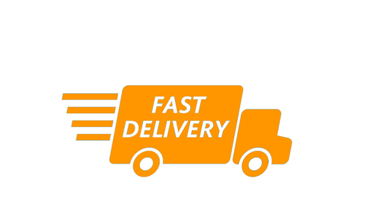
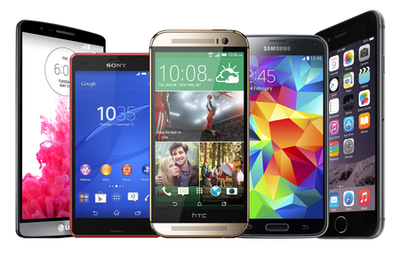
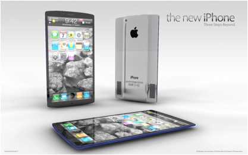
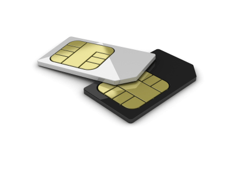

10 reasons why mobile business users should never use a consumer phone
Many small business users never bother to change their contract to a business contract thinking they are the same, please note they are not the same and there are many hidden things a consumer will never get in a million years.
Mobile networks make more money from business users, not necessarily from small businesses but from large corporations where execs can run up large bills and are rarely questioned about the usage. When the mobile network assesses the average revenue per business user you benefit from the overall average per business user.
Mobile networks are so keen to keep business users they will do things they would never dream of doing for a consumer. So if you are on a consumer contract but you use your phone for some business now and then, you need to get wise. Here are some of the benefits business users get that consumers will never get.
1.Instant replacement.
It is not unusual for mobile networks to send a bike or courier to replace your phone if it was lost, stolen or damaged. Maximum 24 hours and you will be with a new phone. For some customers this applies to wherever you are in the world. They want you to be using your phone 24/7, so it is in their interest to minimize down time.
2.Choose ANY phone you like
The economics for business users are different, because of the average use per businessuser; advisors are told they can be more generous to business users. Even if you are not a heavy user, other business users from other companies help to make you look like a good potential user, they must keep happy.
Promotion: Readers of this article are entitled to a free business iPhone 6 or Android phone today.
3.No more monkey business: Customer Support
Where would you put your best people, yep you guessed it, on your best paying customers. Business users get the best customer service agents. The best from consumer customer services get promoted to working on business accounts, they get paid more too. So no more idiotic customer service agents and the call will not be handled in India for sure!
4.Issues get resolved fast
When you are on a business contract issues get resolved fast, the last thing they want to do is annoy someone in their highest earning sector. So you will be privy to a new world of things getting done fast.
5.Upgrade early
Its not unusual for you to be able to upgrade to a new handset early, most offer a new handset every year, guaranteed. They also give iPads too.
6.Better line quality
It is well known that contract call traffic gets prioritised over pay as you go traffic. So if the network antenna is congested, pay as you go calls get bumped! It is therefore logical that business traffic will get prioritized over regular consumer traffic. Do you think a mobile network would risk upsetting big business owners like Alan Sugar and Richard Branson, so they make sure business calls get treated as top priority.
Promotion: Readers of this article are entitled to a free business iPhone 6 or Android phone today.
7.Dual Sims
I bet you never even heard of this;One particular network was well known for giving their business customer two Sim cards with the same number. This was like mega awesome because you could have a Sim card in your car or on a back up handset.
8.Share Internet
Business users can share Internet allowance between each other. For example if you have two phones and one phone that only uses 10% of their internet allowance the other phone can use up the rest and 190%. So it’s like load balancing and an excellent way to stop wasting your hard earned.
9.Share your calls
Yep, not only Internet allowance, if you grab a share plan then you can use the unused minutes in your group. So when Jackie is off sick or on holiday you can use all her unused minutes, yaay!
10.Cheaper roaming rates
Most networks have lower roaming rates for their business users not just in Europe but other countries too.
Yep there is one world for consumers and whole new world for business users, make sure you are on the right side.
Promotion: Readers of this article are entitled to a free business iPhone 6 or Android phone today.